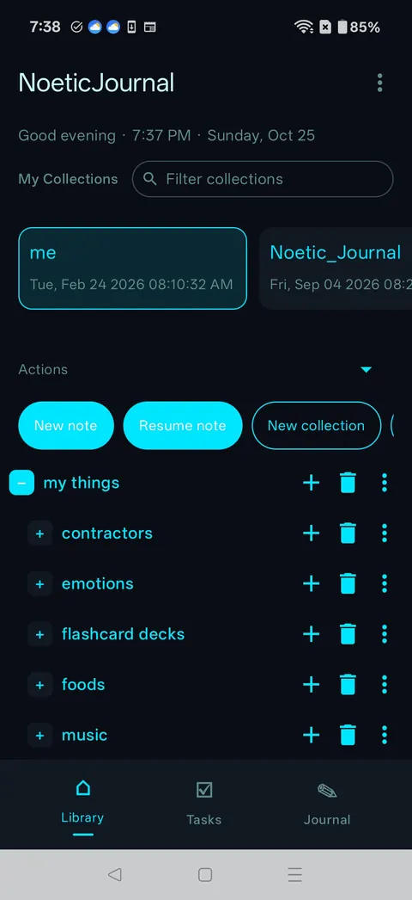

LLM router
├ on-device · MediaPipe / LiteRT
├ self-hosted · Ollama
└ cloud BYOK · OpenAI · Anthropic · Gemini
Noetic Journal
A private, hierarchical knowledge workspace for Android. It has an embedded scripting language, and an AI layer that lets you choose where your data goes: on the phone, on your own server, or to a cloud provider using your own key.
- Pluggable AI backends: on-device Gemma 4 models with vision (MediaPipe, LiteRT-LM), an experimental llama.cpp GGUF path, self-hosted Ollama, and bring-your-own-key OpenAI, Anthropic and Gemini.
- Embedded Lisp-style runtime that users and LLMs can script. It drives automations, scheduled dialogs and UI generated on the fly.
- Semantic search using on-device embeddings, plus Dropbox document sync and a foreground service for long-running work.
- Multimodal, document-scoped chat: attach a photo to a note and ask about it. Each conversation inherits the context and rules of the document it lives in.
- Voice in and out: offline speech recognition (Vosk) and text-to-speech, plus camera and media playback.